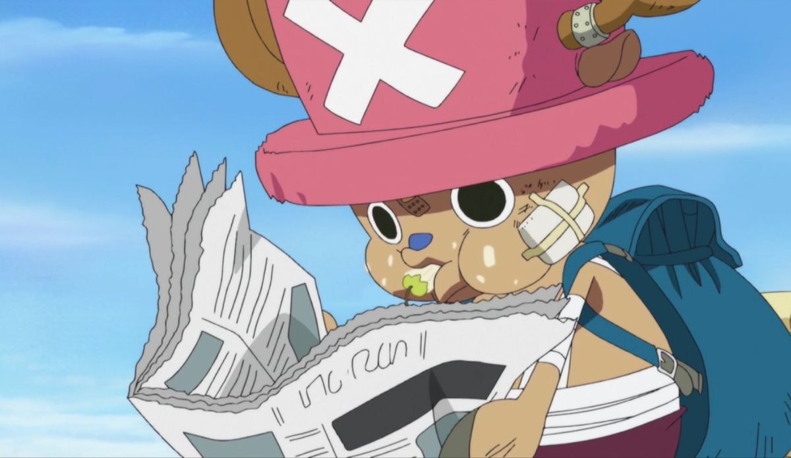
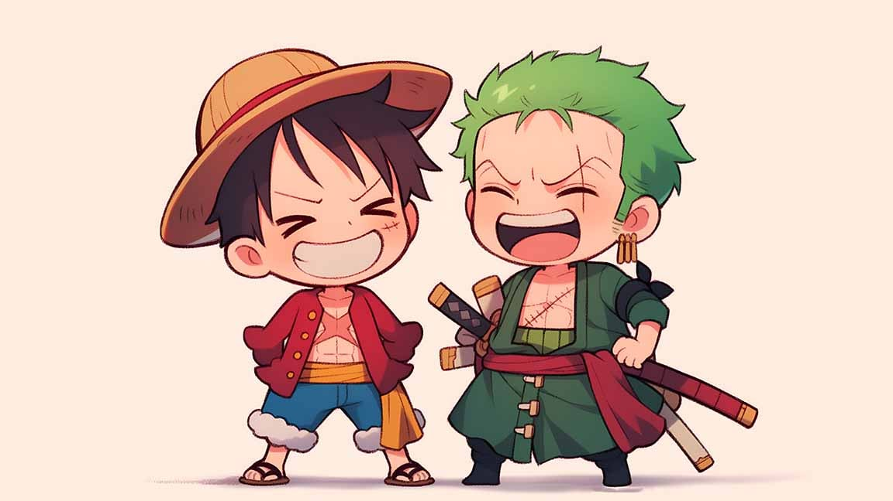
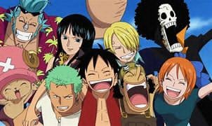
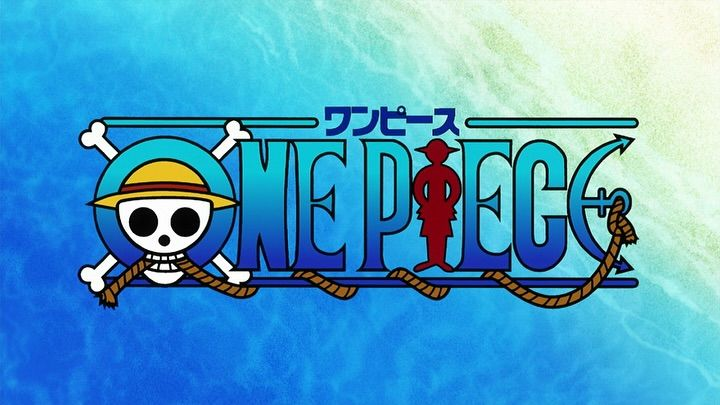

My One Piece Journey
I set sail with the Straw Hat Pirates years ago, and it's been the greatest adventure. From the emotional goodbye to Going Merry to the epic Wano battles, One Piece has shaped my love for freedom, friendship, and following your dreams. My favorite character is Nico Robin, and I truly believe "The One Piece is real."
Currently re-reading the Egghead arc and collecting manga volumes. I even have a tiny Thousand Sunny model on my desk.

Rereading arcs & cute theories. Current favorite: Whole Cake Island

Collecting cute Straw Hat crew figures. Just got tiny Gear 5 Luffy

Sketching chibi Zoro, Nami & original crew adventures

Emotional moments & adorable crew interactions
My Bounty: 80,000,000 Belly (for being a super cute Straw Hat fan)
"I want to live" — Nico Robin
Straw Hat Crew Ranking
1. Nico Robin (archeologist queen)
2. Luffy (freedom icon)
3. Chopper (sweet doctor)
4. Zoro (loyal protector)
5. Sanji (kind chef)
What's your One Piece dream? Let's find the All Blue together